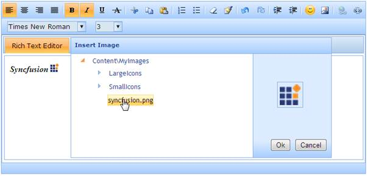

Rich text editor supports to insert an image from the predefined path within the editor area. It allows defining a path from which the image files has to be retrieved.
Properties
|
Name |
Description |
Type of property |
Value it accepts |
Dependency |
|
InsertImagePath |
Sets the path of the folder within the application from which the image files has to be retrieved. |
string
|
Folder path separated by slashes |
Requires ShowToolbar set to true |
 Note: The insert image icon will be enabled only
when the insert image path is defined.
Note: The insert image icon will be enabled only
when the insert image path is defined.
Using Builder
The following steps explain how to enable the insert image option using Builder.
1. In View, call the rich text editor helper, followed by the InsertImagePath method with desired folder path as argument.
|
View[ASPX] <%=Html.Syncfusion().RichTextEditor("myRichtextEditor") .InsertImagePath("Content\\MyImages")%> |
|
View[cshtml] @{ Html.Syncfusion().RichTextEditor("myRichtextEditor") .InsertImagePath("Content\\MyImages").Render();}
|
2. Build and run the application.
Using Properties Model
The following steps explain how to enable the insert image option through properties model.
1. In the Controller, create an instance of RichTextEditorModel, define the InsertImage property and pass the instance through view-specific data to the view as below.
|
[Controller] public ActionResult Index() { RichTextEditorModel myModel = new RichTextEditorModel(); myModel.InsertImagePath = "Content\\MyImages";
//pass the model through view data to the view ViewData["myRichTextEditor"] = myModel; return View(); }
|
2. In View, call the rich text editor helper passing the view data key as control id.
|
View[ASPX] <%=Html.Syncfusion().RichTextEditor("myRichtextEditor")%>
|
|
View[cshtml] @{ Html.Syncfusion().RichTextEditor("myRichtextEditor").Render();}
|
3. Build and run the application.
The rich text editor now loads with insert image icon enabled. On clicking the icon, will display a dialog to browse through image files within the pre-defined path to select an image to be inserted.
The output is shown in the below screen shot.

Figure 214: Rich text editor – Inserting an image